|
|
HELP FIND THE FOLLOWING LOCATIONS
PAGE 25
DANGER
MAN: The
Outcast (Michael Truman: 1964)
N16: M.G.M.
Borehamwood Studios, Elstree Way, Borehamwood -
Gates of W.R.N.S.
Quarters, Gibraltar.
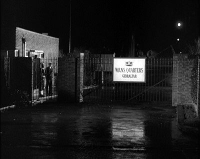
Unknown 1 - Establishing shots of Spanish Village on the cost de Sol.
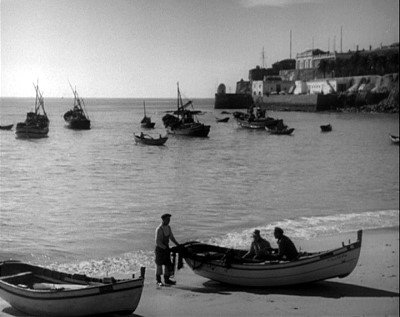
Quai du Large, Cannes, France - **
(Identified by Sietse Postma, August 2023)
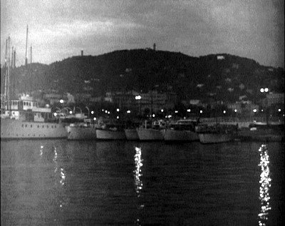
DANGER
MAN: Judgement
Day (Don Chaffey:
1965)
Unknown 1 to 3 – Footage
of Arabic scenes.

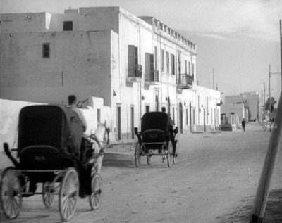
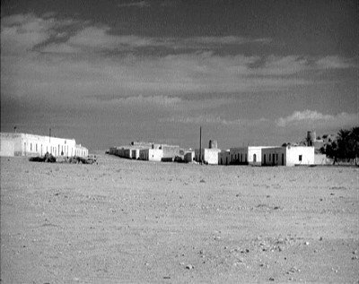
Aden, The
Republic of Yemen, Middle East,
(Identified by Dr. S. Straw, January, 2011)

Unknown 4 – Aircraft is made ready to fly to Baj Jabrin Bir Azhad. Aircraft flies from Amman to Bir Azhad then has to make an emergency landing in the desert.


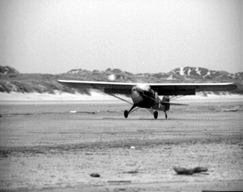


 Aircraft
was G-AHHN, a Auster
J/1 Autocrat destroyed in a hangar fire in Belfast 1987. It was at the
Biggin
Hill Air Show
in 1960.
Aircraft
was G-AHHN, a Auster
J/1 Autocrat destroyed in a hangar fire in Belfast 1987. It was at the
Biggin
Hill Air Show
in 1960.

Unknown 5 – Suddenly, as if by magic, a Land Rover appears.
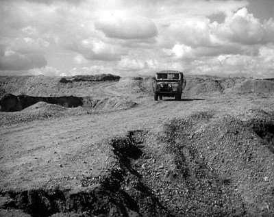
DANGER
MAN: Say
It With Flowers (Peter Yates 1965).
Unknown 1
- Establishing shots Alps on
flight into Switzerland.

Unknown 2 – A Heibeck street.

Unknown 3 - First train in the morning to Heibeck.
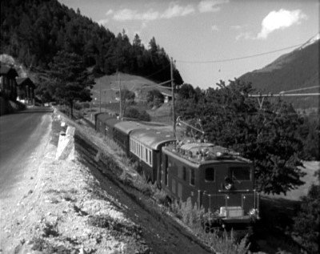
Caux Palace Hotel, Montreux, Switzerland – Wallace is summoned to Die Brajanska Klinik, Heibeck.
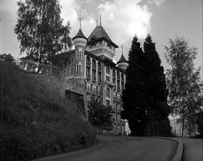
Unknown 4 – Drake goes to visit Wallace in his house in Einhousen, Austria on the road to Innsbruck.
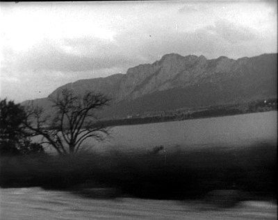
DANGER
MAN: To
Our Best Friend (Patrick McGoohan:
1965)
Lake Mondsee, Vöcklabruck, Austria
– Signal is transmitted from
Moscow to London.
(Identified by Sietse Postma, March 2025)
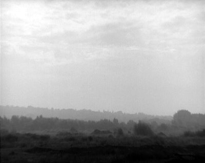
Unknown 2 to 3 - Stock shots establishing Bagdad and the Vincent’s apartment building.

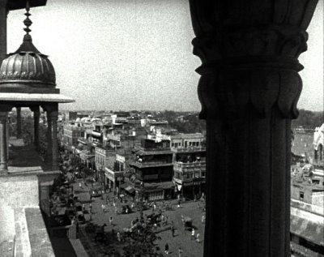
Martyrs' Square, Tripoli, Libia - Stock shots establishing Bagdad and the Vincent’s apartment building (corner of Martyrs' Square and Omar Almukhtar Road).

Staple Hill Chobham Common and
then Burma Road Chobham Common - Shots of road
in and out of
roadhouse/petrol station outside Bagdad.
(Identified by Gordon Thompson, 8th October 2012)

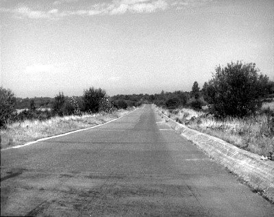
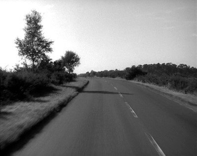
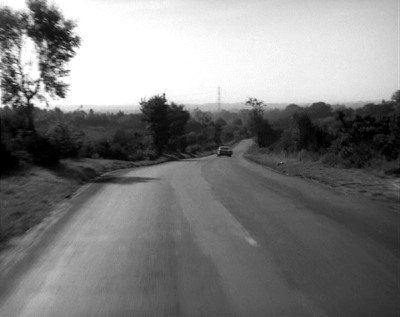
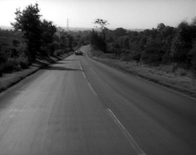
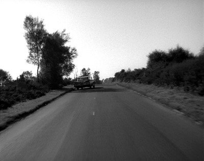
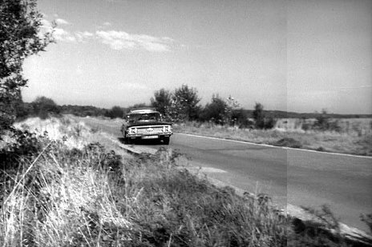
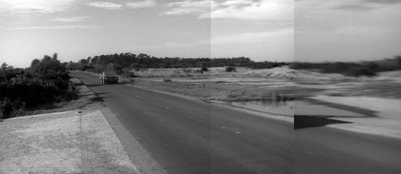
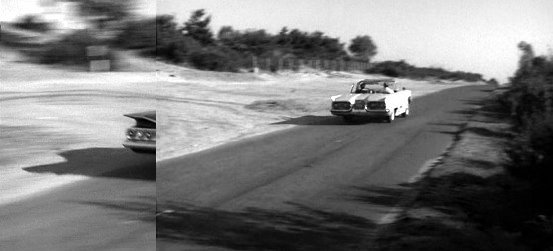
 Looks
like Chobham
Common, Surrey
Looks
like Chobham
Common, Surrey
Unknown 4 – Motorway under construction where Drake (Patrick McGoohan) and The Colonel (Jack Allen) rescue the Vincents from their speeding car.
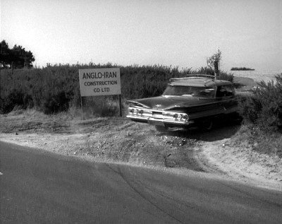
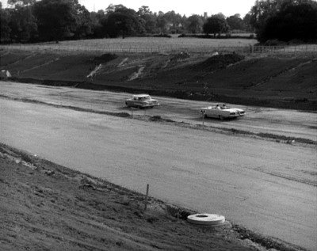
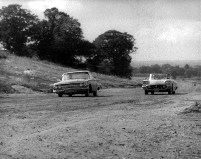
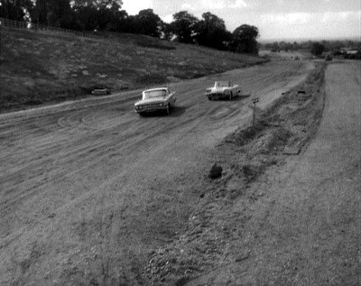
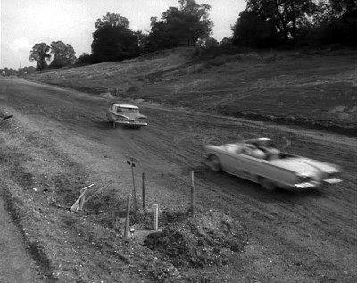
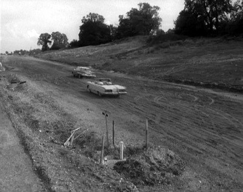
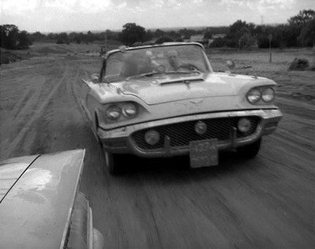
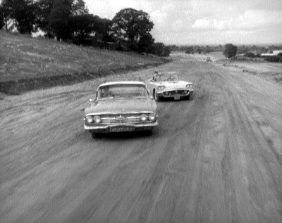
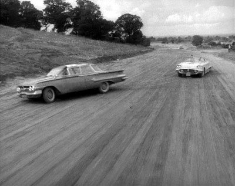
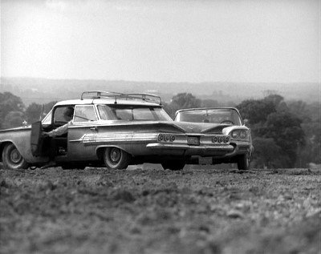
 If
the above is Chobham
Common, Surrey these road
works could well be
part of the M3 Jn.3 to Jn.8 which was being constructed at the time.
If
the above is Chobham
Common, Surrey these road
works could well be
part of the M3 Jn.3 to Jn.8 which was being constructed at the time.
Think you know a spot? Need a bigger image? Email me.
< Previous | Index | Avengerland | Next >
Copyright © 2022 Anthony R. McKay